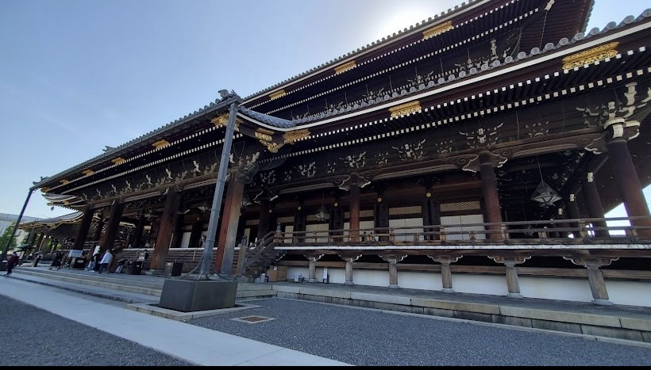
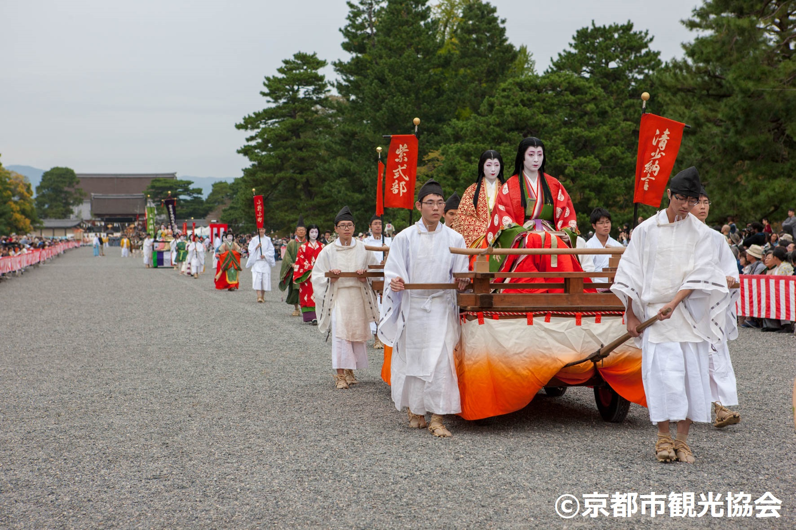

About
Honganji Maizuru Betsuin, often referred to as Maizuru Honganji, is a Buddhist temple in Maizuru, Kyoto Prefecture, Japan. It is a branch of the Nishi Honganji, one of the two main branches of Jodo Shinshu Buddhism. Here is a brief overview of its definition and history:
Honganji Maizuru Betsuin is a temple under the larger organization of Nishi Honganji, which follows the Jodo Shinshu sect of Pure Land Buddhism. This sect focuses on the teachings of Shinran, who emphasized faith in Amida Buddha and the recitation of the nembutsu (chanting "Namu Amida Butsu") as the path to enlightenment and rebirth in the Pure Land.
Founding and Development: The temple's exact founding date is not well-documented, but it is part of the broader expansion of Jodo Shinshu Buddhism during the medieval period in Japan. Nishi Honganji itself was established in the 17th century after a split in the Honganji temple.
Expansion: Over the centuries, Nishi Honganji established various branch temples, including Maizuru Betsuin, to serve the local communities and spread the teachings of Jodo Shinshu.
Cultural Significance: As with many temples in Japan, Honganji Maizuru Betsuin has served not only as a religious center but also as a community hub. It has likely played a role in local festivals, ceremonies, and social gatherings.
Modern Era: In contemporary times, the temple continues to be a place of worship and community activity, maintaining its religious traditions while adapting to the needs of modern practitioners.
This temple, like many in Japan, represents a fusion of historical, religious, and cultural elements, reflecting the enduring legacy of Buddhism in Japanese society.
Though once a single entity, the Honganji temples hold a fascinating tale of historical division. Now, both offer a chance to experience the serenity of Jodo Shinshu Buddhism, the most popular form in Japan.
Gallery

Extra

Gion Festival(Gion Matsuri)
Experience the captivating Gion Festival, Kyoto’s iconic celebration held annually in July. Dating back to the 9th century, this grand festival features the majestic Yamaboko Junko parades, where towering floats adorned with intricate decorations glide through the streets. Throughout the month, Kyoto buzzes with traditional music, dance performances, bustling street stalls, and lively night markets

Aoi Matsuri (Hollyhock Festival)
One of Kyoto's three major festivals, the Aoi Matsuri features a grand procession from the Imperial Palace to the Kamo Shrines. Participants dressed in Heian-era attire and decorated with hollyhock leaves bring ancient Kyoto to life.

Jidai Matsuri (Festival of the Ages)
Celebrating Kyoto’s history, the Jidai Matsuri features a large parade with participants dressed in costumes from various periods, from the Heian period to the Meiji Restoration. The procession begins at the Imperial Palace and ends at Heian Shrine.

To-ji Temple Flea Market (Kobo-san)
Held monthly at To-ji Temple, this market commemorates the death of the temple's founder, Kobo Daishi. It offers antiques, crafts, food, and a lively atmosphere.

Kurama Fire Festival (Kurama no Hi Matsuri)
Held in the mountain village of Kurama, this fiery festival involves locals carrying large torches and lighting bonfires, creating a dramatic and ancient ritualistic atmosphere.

Arashiyama Hanatoro
A stunning event where the streets of Arashiyama are illuminated with thousands of lanterns, and the famous bamboo groves and Togetsukyo Bridge are beautifully lit up. The event includes traditional performances and a serene, magical ambiance.
\